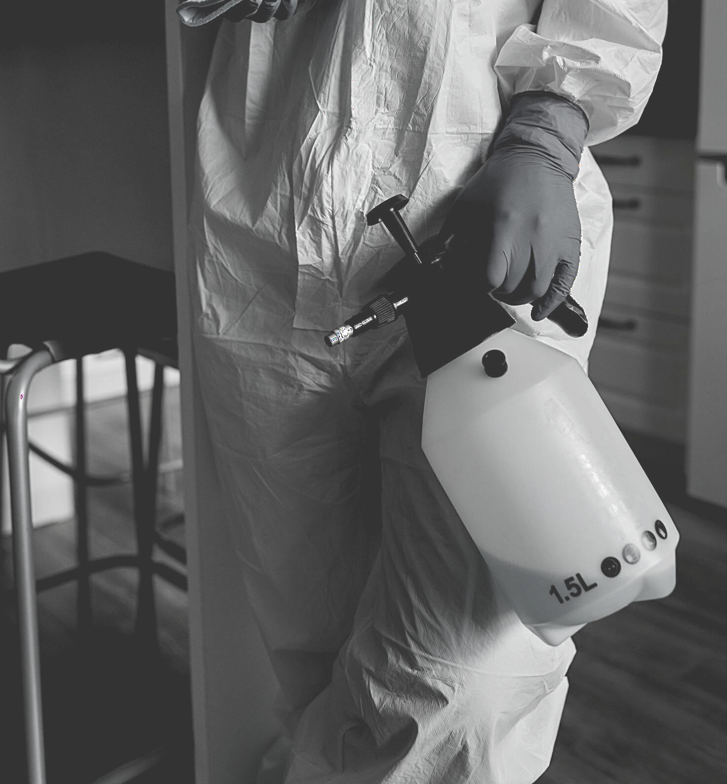
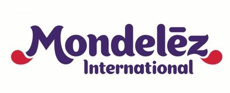
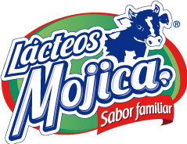
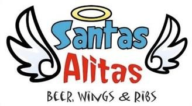
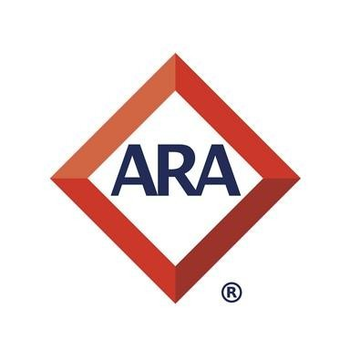
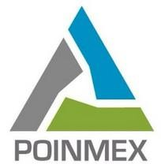

01
Control de plagas
Soluciones preventivas y correctivas para insectos rastreros y voladores.
Soluciones para hogares, oficinas, escuelas, restaurantes, transporte y negocios, con atención personalizada y tratamientos de acuerdo con cada necesidad.
INSEX es una empresa mexicana especializada en control de plagas, desinfección y sanitización de áreas. Desde 2012 ha construido una operación enfocada en la atención personalizada, la seguridad y la solución de necesidades específicas de cada cliente.
El método se define de acuerdo con la zona a tratar, acceso, características del lugar y tipo de plaga.

Soluciones preventivas y correctivas para insectos rastreros y voladores.
Aplicación mediante equipos de pulverización manuales o motorizados según el espacio.
Aplicación localizada en puntos estratégicos para tratamientos específicos.
Alternativa para espacios donde los insecticidas líquidos no son adecuados.
Aplicación especializada para espacios de alta afluencia y áreas de trabajo.
Control preventivo y correctivo mediante estrategias adecuadas a cada instalación.
Atención profesional para instalaciones residenciales, comerciales e institucionales.
El sitio está diseñado para que el cliente pueda explicar su necesidad desde el primer contacto y llegar directamente a WhatsApp o llamada.
La experiencia presentada por la empresa incluye atención a organizaciones de distintos giros.





Completa los datos y el sitio preparará el mensaje para enviarlo directamente al WhatsApp de INSEX.
Comunícate directamente con INSEX para revisar disponibilidad y atención.
Se configura con el dominio y proveedor de correo elegido.
Sí. El material corporativo de INSEX contempla atención en casa habitación, oficinas, escuelas, industria restaurantera, salones de fiestas y transporte, entre otros espacios.
Control de plagas con aplicaciones líquidas, polvos secos, geles específicos, sanitización y desratización, según la necesidad del lugar.
Puedes llamar al 442 157 1646 o usar el formulario de esta página para enviar tu solicitud estructurada por WhatsApp.
INSEX indica en su material corporativo que extiende certificados y documentación de apoyo para las necesidades de sus clientes.